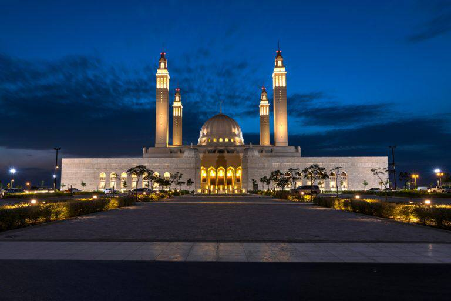

جامع السلطان قابوس الأكبر- عمان

حتي وان كانت الي حد ما بعيدة عن الأنظار . حالة من الابداع
ستجدها عند زيارتك لسلطنة عمان . جامع السلطان
قابوس هو أكبر الجوامع في السلطنة وأبرزها من ناحية
الحداثة والمعمار. هذا الجامع ان لم تزره وتتجول في
ساحاته ولو لمرة واحدة في حياتك فانك تفوت علي نفسك
تجربة رائعة . يحتوي المسجد علي قبة مركزية بها ثاني أكبر
ثريا ثاني أكبر سجادة منسوجة يدويا علي مستوي العالم